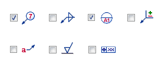
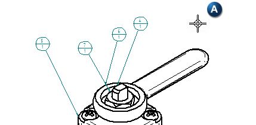
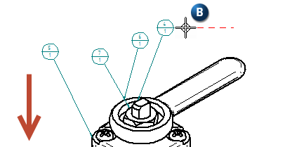
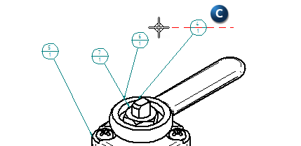
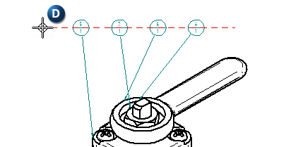
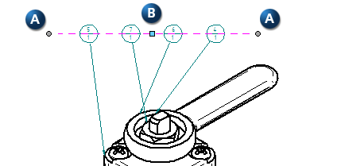

Align annotations using the Annotation Alignment Shape command
You can associatively align balloons and other annotation types using the Annotation Alignment Shape command.
-
Choose Home tab→Annotations group→Annotation Alignment Shape
 .
. -
On the command bar, click Properties
 .
.The Alignment Shape Properties dialog box is displayed.
-
On the General tab, from the Type list, choose Open or Closed.
-
From the Spacing list, choose Non-Uniform or Uniform.
-
(Optional) Assign a Minimum spacing value for Non-Uniform spacing. Clear the check box to manually place annotation types along the alignment shape.
-
For Uniform spacing, accept the default value or enter a new one.
-
-
On the Annotations tab, select all of the annotation types to be attached to the alignment shape.

-
Click OK.
-
Click to place the first point of the annotation alignment shape (A).

Note:Once the first point of the annotation alignment shape is established, the movement of the cursor (B) near unassociated annotations automatically associate (C) the annotations with the alignment shape.


-
Click to end a line segment (D) or begin a new one.

Note:-
Each click creates a vertex (A) connecting two line segments or terminating one line segment.
-
A blue drag handle (B) is created at the center of each line segment.
-
The vertices and the drag handles are visible when the annotation alignment shape is selected.

-
-
Right-click to complete the annotation alignment shape.
-
When creating an alignment shape, you can use the Annotation Alignment Shape command bar to choose a shape type, spacing type, and to link the shape with a specific drawing view.
-
When modifying an alignment shape that is linked to an assembly drawing view with item balloons, you can use the following options on the Annotation Alignment Shape command bar:
-
Order—You can change the item balloon order to clockwise or counterclockwise.
-
Start Balloon—You can click a balloon to use as the first balloon in the clockwise or counterclockwise order.
-
How do I
Manage annotations that are associated with an alignment shapeLearn more
Arranging annotations using alignment shapesModifying alignment shapes to rearrange annotations
Look up more details
Annotation Alignment Shape commandShow/Hide Annotation Alignment Shape command
Annotation Alignment Shape command bar
Alignment Shape Properties dialog box
Alignment Shape Properties dialog box (General tab)
Alignment Shape Properties dialog box (Annotations tab)